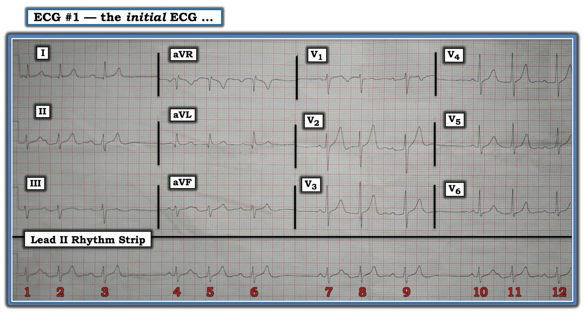
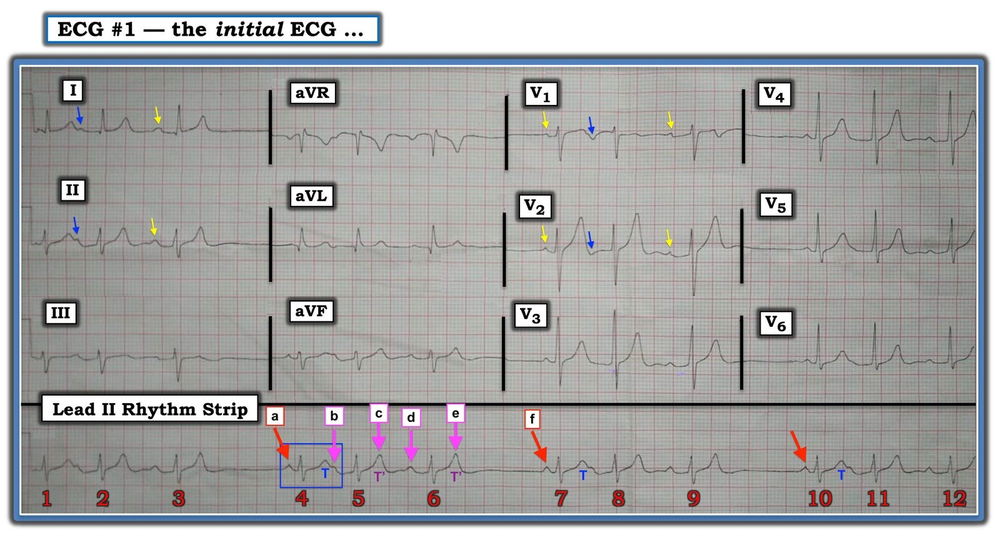
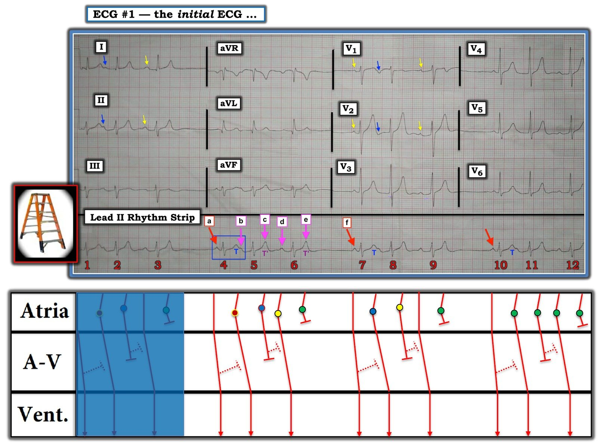
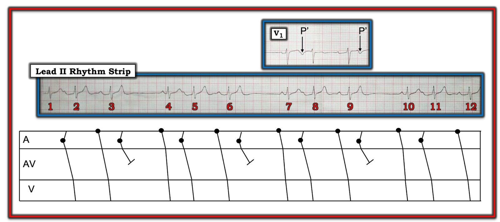

26/09/2020 — Người đàn ông 40 mấy tuổi hồi hộp đánh trống ngực và nhịp theo nhóm: có phải Wenckebach?
Bản dịch tiếng Việt của bài "40 Something Man with Palpitations and Grouped Beating: Is it Wenckebach?" – Dr. Smith’s ECG Blog. Giữ nguyên toàn bộ 7 hình ảnh của bản gốc.
Từ Dr. Smith: Một người đàn ông 40 mấy tuổi than phiền hồi hộp đánh trống ngực. Hãy xem điện tâm đồ dưới đây và cách Ken Grauer mổ xẻ nhịp theo nhóm này.
===================================
BÌNH LUẬN CỦA TÔI, bởi KEN GRAUER, MD (26/9/2020):
===================================
Điện tâm đồ 12 chuyển đạo cùng dải nhịp chuyển đạo II dài kèm theo trong Hình 1 được ghi từ một người đàn ông 40 mấy tuổi được phát hiện có tần số tim khá chậm và không đều. Bệnh nhân ổn định huyết động vào thời điểm ghi bản ghi này. Hãy hình dung đây là toàn bộ bệnh sử có được.
- Đây là nhịp gì? Đây có phải là Wenckebach không?
- Về mặt lâm sàng — TẠI SAO điều này có thể quan trọng?


Hình 1: Điện tâm đồ 12 chuyển đạo và dải nhịp của một người đàn ông 40 mấy tuổi có tần số tim không đều (Xem bài).
SUY NGHĨ CỦA TÔI về điện tâm đồ #1: Đây là một bản ghi khó. Mục đích của tôi khi bàn về ca này là làm nổi bật sự phân biệt giữa blốc AV với các hình ảnh giả blốc AV. Chỉ định điều trị dựa trên khả năng phân biệt nhanh điều này là hiển nhiên = Có thể cần máy tạo nhịp cho các thể blốc AV nặng hơn, có triệu chứng — trong khi thường sẽ không cần máy tạo nhịp cho phần lớn các “hình ảnh giả” blốc AV.
Như mọi khi — tôi thích bắt đầu với nhịp tim (trên dải nhịp chuyển đạo dài) trước khi đánh giá phần còn lại của điện tâm đồ 12 chuyển đạo. Theo Cách tiếp cận 5 Thông số Ps, Qs & 3R — tôi ghi nhận những điểm sau:
- Có sóng P. Tuy nhiên, chưa thấy ngay được hoạt động nhĩ đều đặn đến mức nào (Bàn thêm ở dưới).
- Phức bộ QRS hẹp ở cả 12 chuyển đạo. Do đó, đây là một nhịp trên thất.
- Rhythm (nhịp) không đều. Dù vậy — dường như có nhịp theo nhóm (group beating) (tức là, 4 nhóm, mỗi nhóm 3 nhát, với kiểu khoảng cách tương tự nhau suốt dải nhịp chuyển đạo II dài).
- Vì nhịp thất không đều — Rate (tần số) thay đổi! Các khoảng R-R dài nhất kéo dài khoảng 7 ô lớn (tương ứng với tần số khoảng hơn 40 một chút). Các khoảng R-R ngắn nhất kéo dài khoảng 3 ô lớn (tương ứng với tần số ~100/phút).
- Ta có thể ước tính tần số tim chung dựa vào việc toàn bộ dải nhịp dài 50 ô lớn (tức là, ~10 giây) — trong khoảng thời gian đó có 11 nhát. Do đó — 11 nhát X 6 = 66/phút là tần số chung trung bình.
- Thông số thứ 5 là chữ R thứ 3 — viết tắt của Related (liên quan) (tức là, Sóng P có liên quan với các phức bộ QRS lân cận không?). Ta có thể thấy chỉ bằng một cái liếc mắt rằng ít nhất một số sóng P có liên quan với các phức bộ QRS lân cận — vì khoảng PR đứng trước mỗi phức bộ QRS kết thúc mỗi khoảng ngưng ngắn đều bằng nhau (tức là, một khoảng PR bình thường ~0,15 giây đứng trước phức bộ QRS của các nhát #4, 7 và 10).
- LƯU Ý: Ai quan tâm thêm về “Quan điểm của tôi” đối với Cách tiếp cận Ps, Qs & 3R để đọc nhịp một cách Hệ thống — BẤM VÀO ĐÂY.
ĐIỂM THEN CHỐT (PEARL) #1: Tôi đã nhiều lần nhấn mạnh trên Dr. Smith’s ECG Blog rằng bất cứ khi nào thấy nhịp theo nhóm — cần nghĩ ngay đến khả năng có một kiểu dẫn truyền Wenckebach nào đó. Rõ ràng — Không phải mọi nhịp theo nhóm rồi cũng đều là kết quả của dẫn truyền Wenckebach (tức là, nhịp đôi hoặc nhịp ba nhĩ, cùng một số nhịp khác — có thể biểu hiện “nhịp theo nhóm” không phải do Wenckebach). Dù vậy — Việc luôn ghi nhớ khái niệm nhịp theo nhóm này đã giúp tôi nhận ra đúng nghĩa đen hàng trăm ca Wenckebach trong thời gian kỷ lục!
- Dạng dẫn truyền Wenckebach thường gặp nhất là blốc AV độ 2, Mobitz loại I (còn gọi là Wenckebach AV) — và đây là kiểu dẫn truyền Wenckebach mà tôi sẽ xem xét ở đây. Điểm MẤU CHỐT: Để có blốc AV độ 2 kiểu Mobitz I — nhịp nhĩ (tức là, khoảng P-P) phải đều (hoặc ít nhất gần như đều, nếu có loạn nhịp xoang nền).
- Giá trị của ĐIỂM THEN CHỐT này — là chỉ cần dùng compa đo đơn giản cũng cho phép bạn xác lập trong vài giây rằng bất kể bạn diễn giải đâu là sóng P trên dải nhịp chuyển đạo II dài ở Hình 1 — nhịp nhĩ không đều. Do đó, dù có nhịp theo nhóm — blốc AV độ 2 kiểu Mobitz I không có mặt trên điện tâm đồ #1!
- LƯU Ý: Ai quan tâm đến video của tôi về nhận diện các Blốc AV trên điện tâm đồ — BẤM VÀO ĐÂY. (Nếu bạn bấm vào SHOW MORE bên dưới video trên trang YouTube — bạn sẽ thấy Mục lục chi tiết có liên kết tới các chủ đề chính trong video).
ĐIỂM THEN CHỐT (PEARL) #2: Chân lý sau đây đã là “câu thần chú” loạn nhịp của tôi suốt 4 thập kỷ qua — “Nguyên nhân thường gặp nhất gây khoảng ngưng là một PAC bị blốc” (do Henry J. L. Marriott có một không hai dạy tôi).
- Về mặt thống kê — PAC bị blốc là nguyên nhân gây khoảng ngưng phổ biến hơn rất nhiều so với bất kỳ dạng blốc AV nào. Bằng cách tự nhắc lại chân lý này mỗi khi tôi thấy một khoảng ngưng ngắn (chẳng hạn như 3 khoảng ngưng ngắn trên điện tâm đồ #1) — tôi tránh được chẩn đoán quá mức blốc AV, và, tôi tăng lên rất nhiều khả năng nhanh chóng phát hiện ngay cả những PAC bị blốc kín đáo nhất.


Hình 2: Tôi đã đánh dấu các điểm chính trên Hình 1 (Xem bài).
ĐIỂM THEN CHỐT (PEARL) #3: Theo kinh nghiệm của tôi, 2 bước đơn giản là đánh dấu sóng P và đánh số các nhát trong một rối loạn nhịp phức tạp đã tỏ ra vô giá trong việc giúp nhận ra cơ chế của rối loạn nhịp — và, trong việc truyền đạt suy nghĩ của bạn tới đồng nghiệp (tức là, Không thể làm việc này một cách tiết kiệm thời gian trừ khi bạn đánh số các nhát). Tôi minh họa cách tiếp cận của mình ở Hình 2.
- Tôi bắt đầu với những gì tôi biết. Như đã đề cập ở trên — phức bộ QRS kết thúc mỗi khoảng trong 3 khoảng ngưng trên điện tâm đồ #1 đều có sóng P xoang đi trước với khoảng PR hằng định (và bình thường). Các mũi tên ĐỎ làm nổi bật 3 nhát xoang này (tức là, các nhát #4, 7 và 10).
- Các sự kiện tương tự liên quan đến hoạt động nhĩ bổ sung dường như đang xảy ra trong mỗi nhóm. Ở Hình 2 — tôi tập trung vào nhóm gồm các nhát #4, 5 và 6 — và đã đánh dấu hoạt động nhĩ mà tôi tin là đang xảy ra.
- Sóng P được đánh dấu “a” là sóng P xoang của nhát #4, nhát mở đầu chu kỳ.
- Sóng P kế tiếp trong nhóm 3 nhát này dường như được đắp thêm vào phần cuối sóng T của nhát #4 (đánh dấu “b”). Việc “b” xuất hiện ở tận cuối sóng T của nhát #4 cho phép ta thấy một “sóng T bình thường” trông như thế nào ( = chữ T màu XANH LAM thứ 1 trên chuyển đạo II dài — nằm trong hình chữ nhật XANH LAM).
- Hãy so sánh hình dạng sóng T của các nhát #5 và 6 (đánh dấu bằng chữ T’ màu TÍM ) — với hình dạng của sóng T “bình thường” đi sau nhát #4. Chẳng phải sóng T của các nhát #5 và #6 nhọn hơn sóng T bình thường sao? Độ nhọn thêm này là do các sóng P sớm “c” và “e” ẩn trong các sóng T này.
- Có thêm một sóng P nữa trong nhóm 3 nhát này (đánh dấu “d” — đi trước nhát #6 với khoảng PR dài hơn khoảng PR của nhát xoang #4).
- Các sóng P ẩn trong sóng T của các nhát #5 và #6 (đánh dấu “c” và “e”) đều bị blốc. Việc cả hai sóng P này đều không được dẫn truyền là hợp lý — vì chúng xuất hiện rất sớm trong chu kỳ, có lẽ trong thời kỳ trơ tuyệt đối.
ĐIỀU CỐT LÕI: Các dấu hiệu trên tạo thành một chuỗi lặp lại, trong đó một khoảng ngưng ngắn được kết thúc bằng một nhát dẫn truyền từ xoang — tiếp theo là 4 sóng P liên tiếp (các mũi tên HỒNG làm nổi bật b, c, d và e) — rồi chu kỳ lặp lại (tức là, các sự kiện tương tự xảy ra trong nhóm kế tiếp gồm các nhát #7, 8, 9 — và thêm một lần nữa với nhóm 3 nhát cuối cùng = các nhát #10, 11, 12).
- Phải thừa nhận rằng rất khó phân biệt giữa một nhát xoang đơn lẻ theo sau là các PAC lặp lại với theo sau là các loạt ngắn ATach (nhịp nhanh nhĩ – Atrial Tachycardia). Tôi nghiêng về khả năng thứ nhất vì: i) Các khoảng P-P giữa a, b, c và d không bằng nhau hết (tức là, khoảng P-P từ c đến d ngắn hơn rõ rệt so với các khoảng P-P khác); và, ii) Hình dạng sóng P dường như thay đổi qua các sóng P liên tiếp này — trong khi tôi sẽ chờ đợi hình dạng sóng P tương tự nhau nếu đây là các loạt ATach (Lưu ý hình dạng khác nhau của sóng P ở một số chuyển đạo được làm nổi bật bằng các mũi tên nhỏ màu VÀNG so với XANH LAM).
Phần còn lại của điện tâm đồ 12 chuyển đạo: Phần còn lại của bản ghi 12 chuyển đạo của điện tâm đồ #1 khá bình thường, không có gì đáng chú ý.
- Trục lệch trái — dù chưa đủ âm để đạt tiêu chuẩn LAHB (vì QRS ở chuyển đạo II đẳng điện chứ không âm ưu thế). QTc không kéo dài. Không có lớn buồng tim. Các PAC bị blốc (nằm trong nhiều sóng T) giải thích phần lớn độ nhọn thêm của sóng T. Các thay đổi ST-T có vẻ không cấp tính.
Tổng hợp lại: Nhịp nền là nhịp xoang. Rối loạn nhịp chủ yếu dường như là các chuỗi lặp lại của các PAC liên tiếp. Các chuỗi này kết thúc bằng một PAC bị blốc gây ra một khoảng ngưng ngắn (<1,4 giây) — rồi chu kỳ lại tiếp tục.
- Rối loạn nhịp này không phải Wenckebach AV. Không cần máy tạo nhịp.
- Xử trí sẽ tùy thuộc vào triệu chứng — tần suất các đợt PAC theo thời gian, và liệu các loạt PAC dài hơn có duy trì bền bỉ không (liệu có tiến triển thành các loạt ATach không) — và, có hay không bệnh tim nền hoặc các yếu tố thuận lợi khác. Đáng tiếc — không có thêm thông tin theo dõi về ca này.
- T.B. (P.S.) Các nhịp SVT do vào lại (chẳng hạn AVNRT) thường khởi đầu bằng nhiều PAC. Việc bắt đầu thử điều trị theo kinh nghiệm (tức là, bằng thuốc chẹn ß hoặc thuốc khác) — hay đánh giá bằng một thời gian theo dõi dài hơn sẽ là quyết định của bác sĩ điều trị.

PHẦN BỔ SUNG (chiều 26/9): Dr. Smith viết cho tôi ngay khi bài hôm nay được đăng, hỏi tôi rằng “Anh có thể thêm một giản đồ bậc thang không?”. Lý do ban đầu tôi không làm việc này — là vì có nhiều cách giải thích khả dĩ cho hoạt động nhĩ mà ta thấy, và tôi không cảm thấy có đủ dữ liệu theo dõi để xác định một câu trả lời chính xác.
- Như thường gặp với các rối loạn nhịp phức tạp (đặc biệt khi lượng bản ghi theo dõi còn hạn chế) — có thể có nhiều hơn một giả thuyết hợp lý cho cơ chế của một rối loạn nhịp. Tôi minh họa 3 khả năng trong Giản đồ bậc thang mà tôi vừa dựng (Hình 3). Tôi vẫn không nghĩ rằng ta có thể biết chắc chắn chuyện gì đang xảy ra — nhưng cân nhắc các khả năng có thể mang tính giáo dục:
- Với Nhóm thứ 1 ( = các nhát #4,5,6) — Nhát khởi đầu trong nhóm này được dẫn truyền từ xoang (nhát #4). Tiếp theo là 4 PAC liên tiếp. Tôi dùng các màu khác nhau để gợi ý nguồn gốc từ các vị trí khác nhau trong nhĩ — nhưng một hoặc nhiều PAC trong số này có thể xuất phát từ cùng một vị trí. Lý do khiến các khoảng PR đứng trước nhát #5 và #6 dài hơn khoảng PR của nhát dẫn truyền từ xoang #4 có thể là: i) Các PAC này xuất phát từ một vị trí trong nhĩ xa hơn so với nút AV; hoặc, ii) Có thể có một phần dẫn truyền ngược dòng (các đầu cụt nét chấm đi ngược lại) làm chậm dẫn truyền xuôi dòng. PAC cuối cùng (đánh dấu “e” — và là vòng tròn XANH LÁ trong giản đồ bậc thang) có lẽ xảy ra trong thời kỳ trơ tuyệt đối, và do đó bị blốc (không dẫn truyền).
- Với Nhóm thứ 2 ( = các nhát #7,8,9) — Cách mô tả trên giản đồ bậc thang tương tự như cơ chế tôi đề xuất cho Nhóm thứ 1 — ngoại trừ việc nhát #9 có thể được dẫn truyền từ xoang (mặc dù với khoảng PR kéo dài do chậm trễ gây ra bởi dẫn truyền ngược dòng một phần từ PAC trước đó được vẽ màu VÀNG).
- Với Nhóm thứ 3 ( = các nhát #10,11,12) — Có thể đơn giản chỉ là nhịp nhanh nhĩ (tức là, mọi sóng P sau nhát dẫn truyền từ xoang #10 đều xuất phát từ cùng một ổ nhĩ — được vẽ màu XANH LÁ). LƯU Ý #1: Với các khoảng PR kéo dài thường xuyên mà ta thấy trên bản ghi này — dường như nhiều khả năng là nếu ATach có lúc được thiết lập và duy trì bền bỉ — thì ATach này sẽ biểu hiện dẫn truyền Wenckebach. LƯU Ý #2: ATach không phải lúc nào cũng là một rối loạn nhịp đều hoàn hảo — như có thể là trường hợp ở Nhóm cuối cùng này.
T.B. (P.S.): Tôi xin nhấn mạnh rằng bất kể cơ chế chính xác của rối loạn nhịp này rốt cuộc là gì — cách tiếp cận xử trí ban đầu của tôi vẫn sẽ như nhau.


Hình 3: Tôi đã thêm một giản đồ bậc thang vào Hình 2, cho thấy 3 giả thuyết khả dĩ về cơ chế của hoạt động nhĩ trong rối loạn nhịp này (Xem bài).
================
- LƯU Ý: Xin chân thành CẢM ƠN Feroz Haroon (từ Srinagar, Ấn Độ) đã chia sẻ bản ghi này với chúng tôi!
================

PHẦN BỔ SUNG #2 — của David Richley (28/9/2020): Dave đã tiếp nối bình luận ngày 26/9 của anh ấy bằng giản đồ bậc thang của riêng mình (Hình 4). Mặc dù chúng ta vẫn không biết chắc câu trả lời đúng là gì — tôi nghĩ việc cho thấy đôi khi có thể tồn tại nhiều khả năng như thế nào là điều mang tính giáo dục.
- Tôi xin nhấn mạnh một lần nữa rằng dù chúng ta không chắc chắn về cơ chế của nhịp thú vị này — cách tiếp cận xử trí ban đầu của tôi vẫn sẽ như nhau.
David Richley viết như sau: Tôi nghĩ đây có thể đơn giản là nhịp xoang kèm nhịp đôi nhĩ, trong đó các nhát bóp nhĩ sớm (APB) luân phiên được dẫn truyền và không được dẫn truyền, như minh họa trong giản đồ bậc thang này (Hình 4). Theo giả thuyết của tôi, các nhát #1, 3, 4, 6, 7, 9, 10 và 12 là nhát xoang; các nhát #2, 5, 8 và 11 là APB được dẫn truyền — và ngay sau các nhát #3, 6 và 9 là một APB không được dẫn truyền.
- Lý do cứ cách một APB lại có một APB không dẫn truyền là vì nó có khoảng ghép hơi ngắn hơn so với các APB được dẫn truyền, điều này thấy rõ nhất ở chuyển đạo V1.
- Nhát xoang ở cuối mỗi nhóm 3 nhát có khoảng PR dài hơn so với nhát ở đầu nhóm — vì nút AV, do có ít thời gian hồi phục hơn, vẫn còn trơ một phần và dẫn truyền chậm hơn.
- Điểm yếu lớn trong cách giải thích của tôi là nhát thứ 2 trong mỗi nhóm có sóng T cao hơn nhát đầu tiên. Điều này được giải thích dễ dàng bằng các giả thuyết của Ken vì anh ấy đề xuất rằng có một sóng P sớm chồng lên sóng T này, trong khi tôi không nghĩ là có. Cách giải thích tốt nhất của tôi cho sóng T cao của nhát thứ 2 là phức bộ QRS này có sóng R cao hơn và tổng thể dương hơn so với nhát thứ 1, đặc biệt ở một số chuyển đạo ngực — và do đó có thể dự đoán một sóng T cao hơn.
- Điểm yếu lớn trong các giả thuyết của Ken – theo ý kiến của tôi – là hoàn toàn không có bằng chứng nào về sóng P trên sóng T của nhát thứ 2 trong mỗi nhóm ở V1. Ken cho rằng có một sóng P ở đây, còn tôi cho rằng không có — và đây là khác biệt chính giữa chúng tôi trong cách nhìn điện tâm đồ và do đó trong cách diễn giải nó.


Hình 4: Giản đồ bậc thang của David Richley (Xem Phần bổ sung #2).